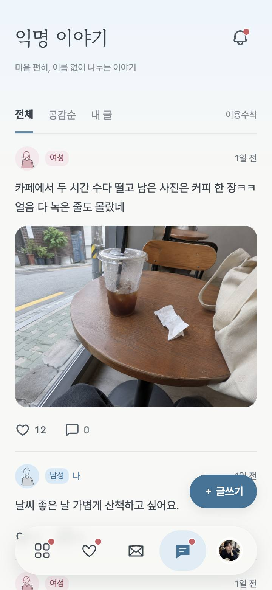
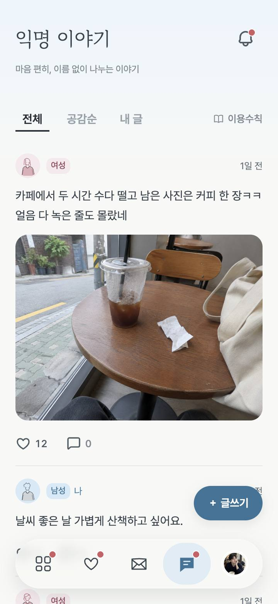
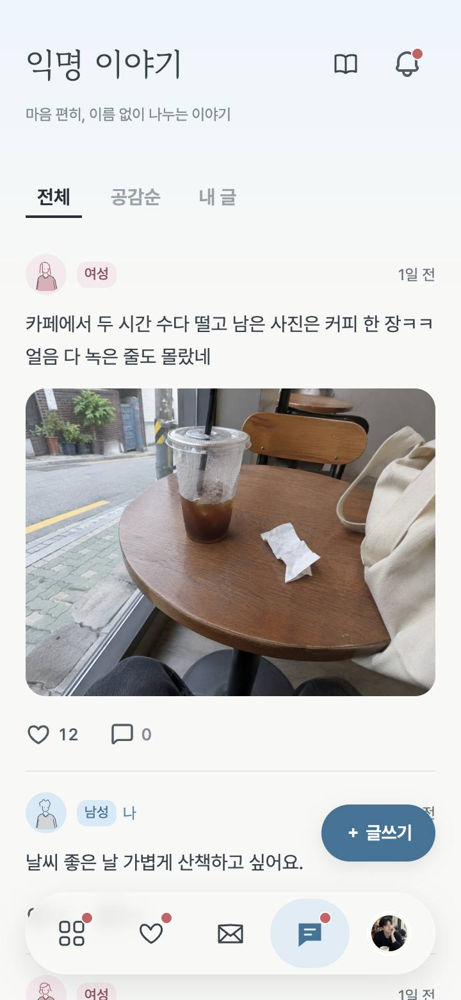
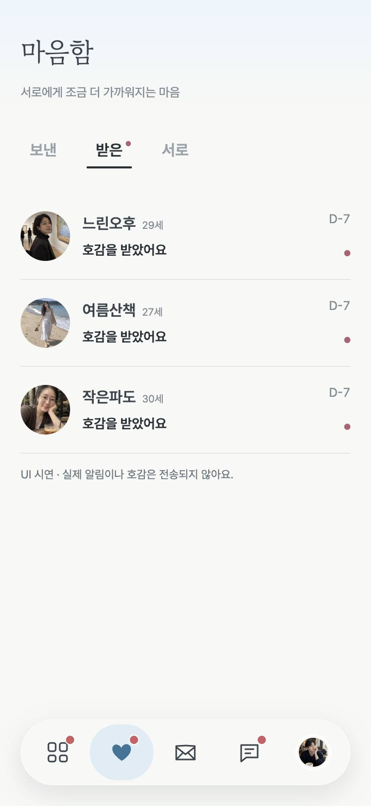

익명 이야기 · 탭
- 지금 걸리는 점: 고른 탭만 굵기가 확 커지고(14 보통 → 굵게), 밑줄이 파랑이라 마음함 · 교환 탭(검정 짧은 밑줄)과 결이 달라요. 탭 아래 선과 첫 글의 위 선이 겹쳐 2px로 두껍게 보이고, "이용수칙"이 탭과 같은 줄에 있어 네 번째 탭처럼 보여요.
- A · B · C 공통: 겹친 선을 없애고, 글자는 15 SemiBold 하나로 맞춰 고른 탭은 cool-neutral-900, 나머지는 400이에요.

지금14 · 고르면 굵게 + 파랑 밑줄 · 이용수칙이 탭 줄 끝 · 선 두 겹

A마음함 탭과 같은 결 · 검정 짧은 밑줄 2, 전체 선 없음. 이용수칙은 탭 줄 끝에 책 아이콘 + 13 회색 글자로 구분

BA + 이용수칙을 머리로 · 종 옆 책 아이콘(44). 탭 줄에는 탭만 남아요
C알약 칩 · 36 높이, 고른 칩 검정 바탕 · 흰 글자, 나머지 흰 바탕 + 선. 이용수칙은 B처럼 머리로

참고마음함 탭(지금 데모)